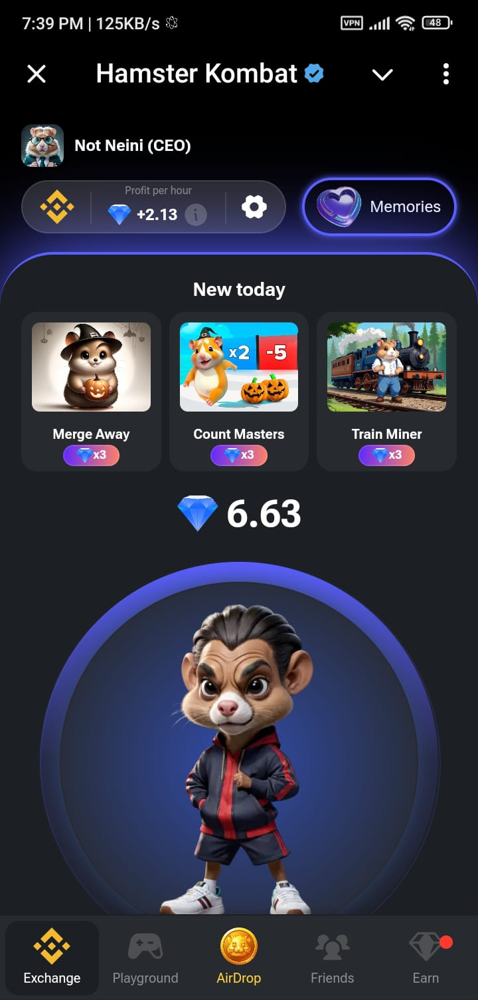

Hamster Kombat is a mining bot launched on Telegram. Initially, users need a referral link from anywhere to join this bot. After joining, they can start the bot and see the Hamster Kombat interface. Users can begin mining by completing simple tasks. New cards are introduced daily, and by upgrading these cards, users can increase their mining rate. In Hamster Kombat, profit is measured as profit per hour, with users typically earning 2 to 3 million coins per hour. This is a major aspect of the airdrop. Many users are unaware of these details; they accumulate a lot of coins without increasing their profit. Hamster Kombat has officially announced that profit per hour significantly affects the airdrop.
To increase profit per hour, users can upgrade cards to specific levels to achieve valuable profits. Hamster Kombat launches many cards each week. Users can select a specific card and upgrade it to a certain level; however, after reaching a very high level, the card's price becomes too high, and it may not yield valuable profits. Users can then upgrade other cards to continue increasing their profits.
March 26, 2024.